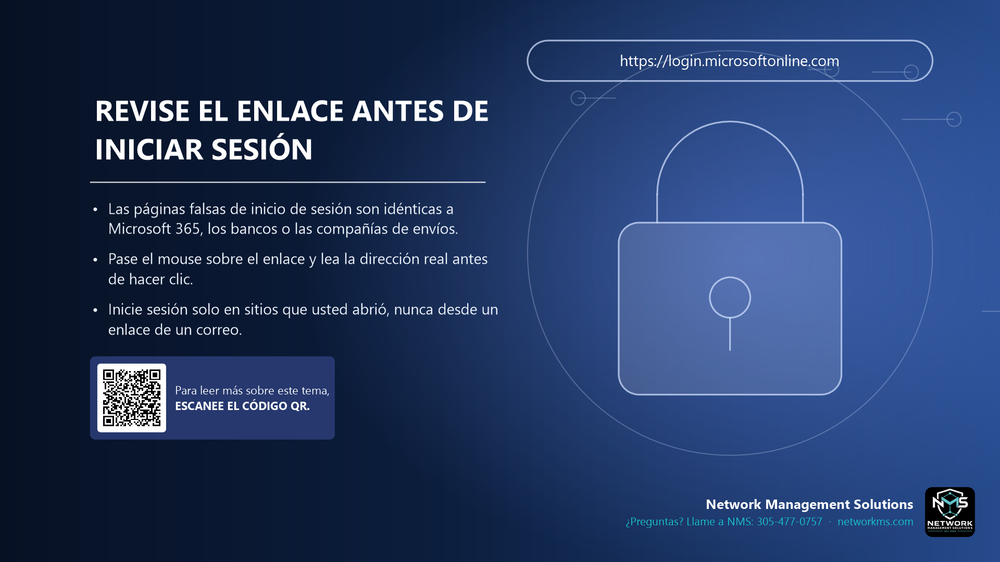

Revise el enlace antes de iniciar sesión

- Las páginas falsas de inicio de sesión son idénticas a Microsoft 365, los bancos o las compañías de envíos.
- Pase el mouse sobre el enlace y lea la dirección real antes de hacer clic.
- Inicie sesión solo en sitios que usted abrió, nunca desde un enlace de un correo.
Un enlace de phishing lo lleva a una copia de una página real de inicio de sesión. Todo se ve igual, pero la contraseña que escribe le llega al atacante.
Antes de hacer clic, pase el mouse por el enlace (o manténgalo presionado en el teléfono) y lea la dirección. El nombre real de la empresa debe estar justo antes de la primera barra, por ejemplo login.microsoftonline.com, y no microsoft.login-secure.co.
El candado (HTTPS) solo significa que la conexión está cifrada. Los sitios falsos también lo tienen. Lo que importa es la dirección.
El hábito más seguro: abra el sitio usted mismo desde un favorito o escribiendo la dirección.
¿Tiene dudas sobre un correo, mensaje o llamada? Llame a NMS antes de hacer clic: 305-477-0757 · networkms.com